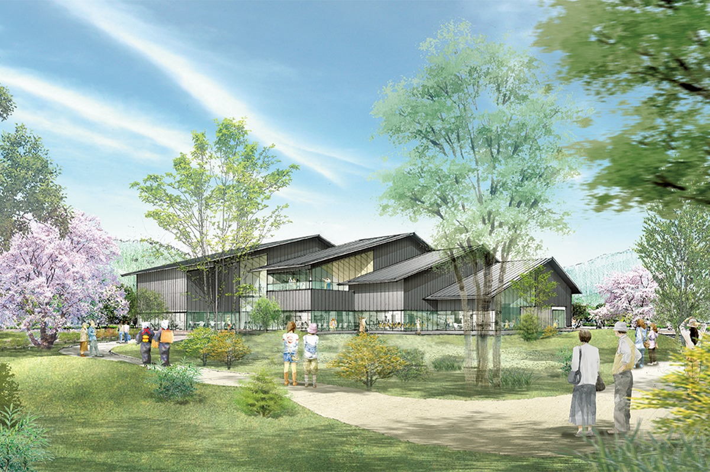
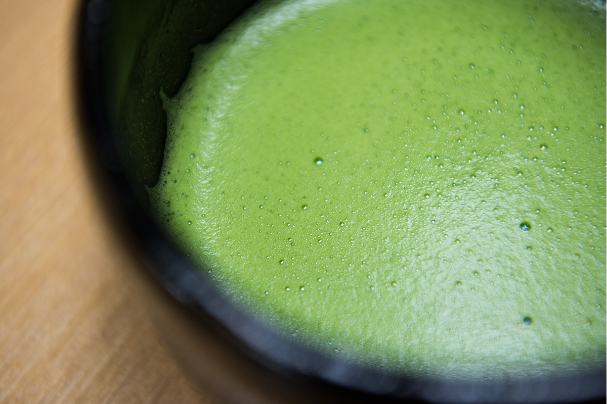
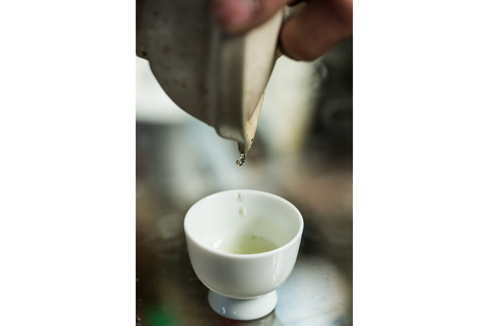
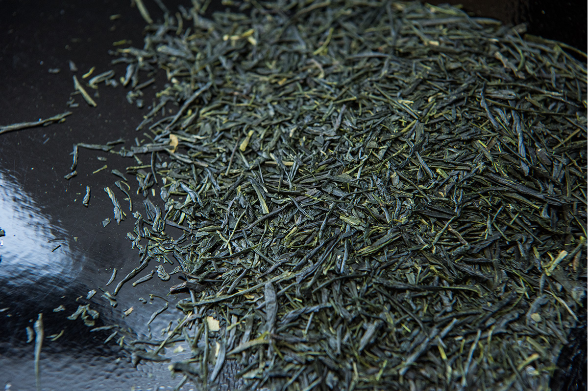
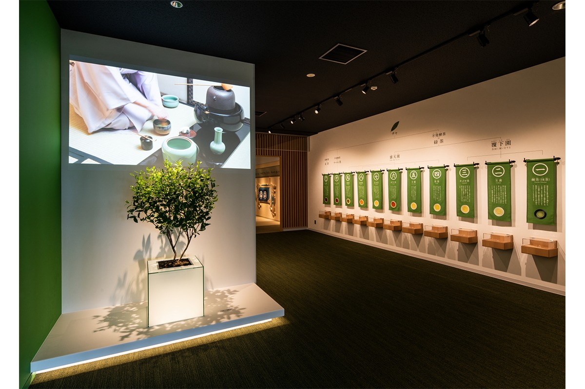
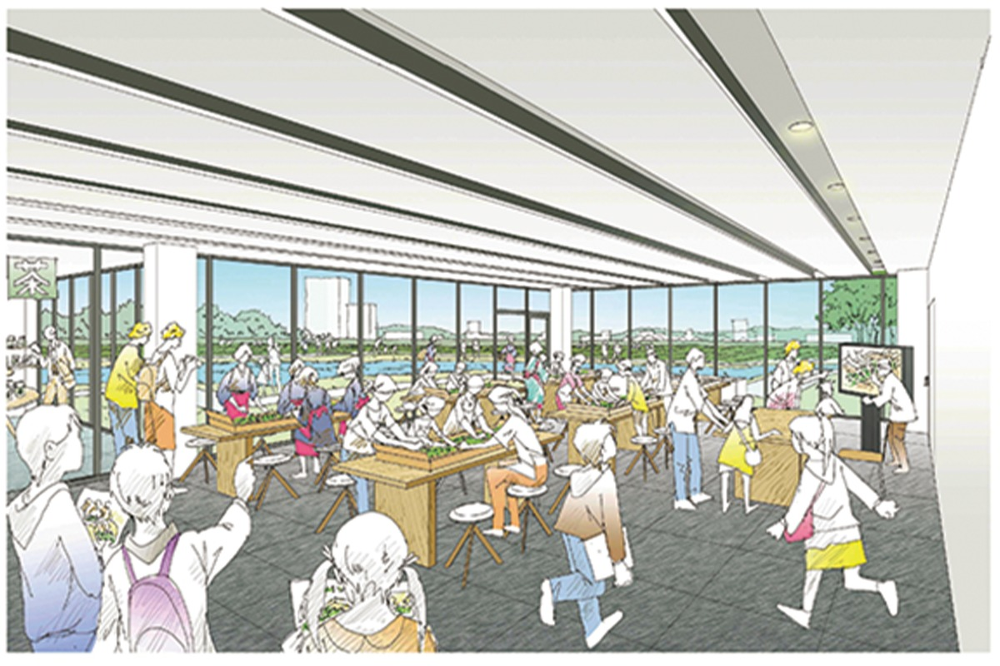
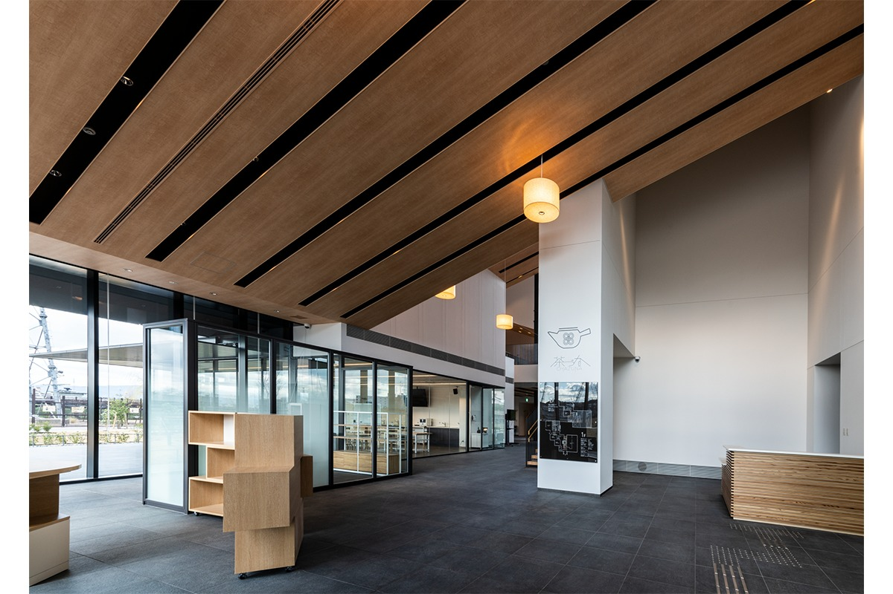

Префектура Киото · Удзи · чай
Чай Удзи: восемь веков истории и парк, где её можно потрогать руками

Когда-то чай из Удзи каждый год торжественно везли в Эдо к столу сёгуна. Ниже краткий курс истории самого знаменитого японского чая и место в Удзи, где эту историю показывают целиком.
История
От монастырских садов до чая сёгунов
Удзи лежит к югу от города Киото, на реке Удзи. Здесь стоят храм Бёдо-ин и святилище Удзигами, внесённые в список Всемирного наследия ЮНЕСКО, но в Японии город знают прежде всего по чаю. Чай Удзи ценили несколько веков подряд: в эпоху Эдо его каждый год отправляли сёгуну в особых чайных кувшинах, и шествие с этими кувшинами по дорогам страны называли «тяцубо-дотю».

В эпоху Камакура (XII–XIV века) из Китая пришёл способ пить порошковый чай, залитый горячей водой и взбитый. Тогда же чай начали выращивать в Тоганоо на северо-западе Киото и в Удзи. В XIV–XVI веках, при поддержке сёгунов из рода Асикага, в Удзи заложили семь знаменитых чайных садов. Под покровительством сёгунского дома и императорского двора чай Удзи стали называть лучшим в Японии.
В конце XVI века здесь начали выращивать чай под навесами. Кусты укрывают от солнца перед сбором, листья становятся нежнее и слаще, и именно так появился японский маття в том виде, в каком его знают сегодня. В те же годы Сэн-но Рикю (1522–1591), чайный мастер при дворе правителей страны, довёл до совершенства чайную церемонию.
Сэнтя и гёкуро
В 1654 году из Китая пришёл ещё один способ: обжаренный в котле и скрученный лист заливали горячей водой. В первой половине XVIII века монах школы Обаку по прозвищу Байсао (1675–1763) открыл чайную «Цусэнтэй», продавал в ней листовой чай сэнтя и приучил людей к чаепитию.
Перелом случился в 1738 году. Соэн Нагатани (1681–1778), чаевод из деревни Юятани в соседнем с Удзи Удзитаваре, придумал «метод Удзи»: листья не жарят, а пропаривают, затем сушат и скручивают. Так родился сэнтя, которым Япония живёт до сих пор. А когда метод Удзи соединили с выращиванием под навесами, появился гёкуро, чай с особенно глубоким, сладковатым вкусом.


Метод Удзи получил особую награду на первой выставке-конкурсе чая в Иокогаме в 1879 году. А в 1926 году в сельскохозяйственной школе в Кидзу на юге префектуры открыли единственное в стране отделение, где учили чайному делу.
Вкус
Чего стоят три процента
Родиной чая Удзи считают Ямасиро, южную часть префектуры Киото. На эти места приходится всего около трёх процентов японского чая, так что чай здесь редкий, зато его качество известно и в Японии, и за её пределами. Местные почва и климат дают чай со свежим, чистым ароматом и ясным вкусом.
Любопытная деталь: «чай Удзи» это зарегистрированная торговая марка, и растёт он не только в Киото. Так называют зелёный чай из листа, собранного в четырёх префектурах (Киото, Сига, Нара и Миэ), если довести его до готовности в префектуре Киото традиционными способами Удзи.
Парк
Где история чая под открытым небом
В 2021 году в Удзи открылся парк истории чая и города Удзи. Он занимает берег реки и часть города рядом с ней и делится на две части.
У реки находится историческая зона. Здесь восстановили дамбу Тайко-дзуцуми, которую в конце XVI века построили по приказу Хидэёси Тоётоми (1537–1598), полководца, объединившего Японию: она защищала берег от размыва. Со временем перед дамбой намыло песчаную косу, и в эпохи Эдо и Мэйдзи (XVII–XIX века) на ней разбили чайные плантации. Этот пейзаж тоже воссоздали, а чайный сад сделали настоящим: в нём можно самому собирать чайный лист.

Со стороны города устроена зона встреч: площадь для прогулок и отдыха, сад, который меняется с каждым временем года, и центр Chazuna. Под одной крышей здесь собраны музей чая Удзи и истории города, мастерская, ресторан и магазин.

В мастерской можно самому смолоть маття или составить купаж из разных чаёв: у чаеводов Удзи это смешивание называют «гогуми». Здесь же проходят чайные церемонии. Если зайти в Chazuna в начале прогулки, храмы и улицы Удзи потом читаются совсем иначе.

Chazuna, центр парка истории чая и города Удзи
- Адрес
- префектура Киото, Удзи, Тодо Маруяма, 203-1
- Телефон
- +81 774-24-2700
Фото: Ацуси Ямахира, Мару Накатани.